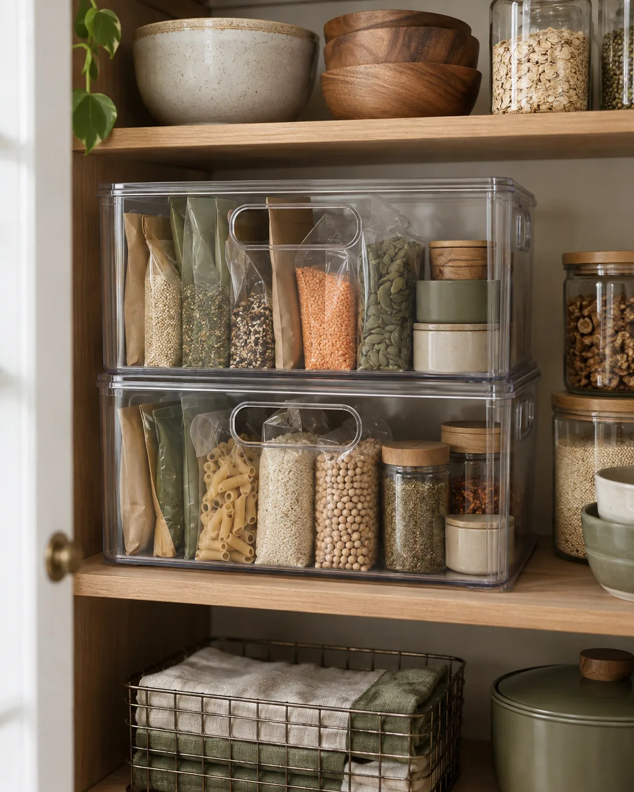

01
SMALL PANTRY IDEA 01
Group everyday food in bins
Give breakfast foods, snacks and baking supplies their own zones before buying organizers. A bin can keep small packets from disappearing behind larger boxes and lets you pull a whole category forward. Put the items you use daily on an easy-to-reach shelf; keep occasional extras above or below them.
Before you buy: Choose a bin that leaves room for your hand and cabinet hinges. Use the oldest packages first and keep labels visible. An open-front bin suits packaged food; it is not a substitute for a food-storage container.
OPTION TO COMPARE
IRIS USA open-front stackable bins, 4-pack
Compare the listed 13 × 10 × 8-inch size with your shelf. The clear open-front design differs from the enclosed bins shown in the inspiration photo.
View on Amazon →As an Amazon Associate I earn from qualifying purchases.